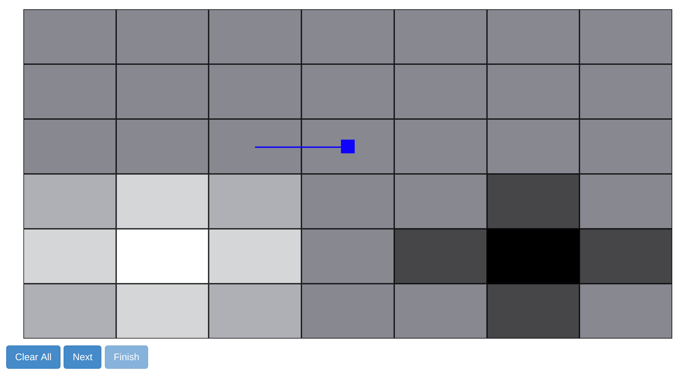

You will be showing another person where to navigate in a grid by providing demonstrations. The darker squares are very costly and you want to avoid them. The lighter squares are good, and you want to show the other person where they are through your demonstrations. The person learning from your demonstration will only see the path you take, not the color of the grid squares.
You start at the blue square and can move in only 4 directions by clicking on the adjacent square you wish to move to. If you need to restart, click "Clear All". When your demonstration is done, click "Next" to move on to the next environment or "Finish" when done with all 3.
